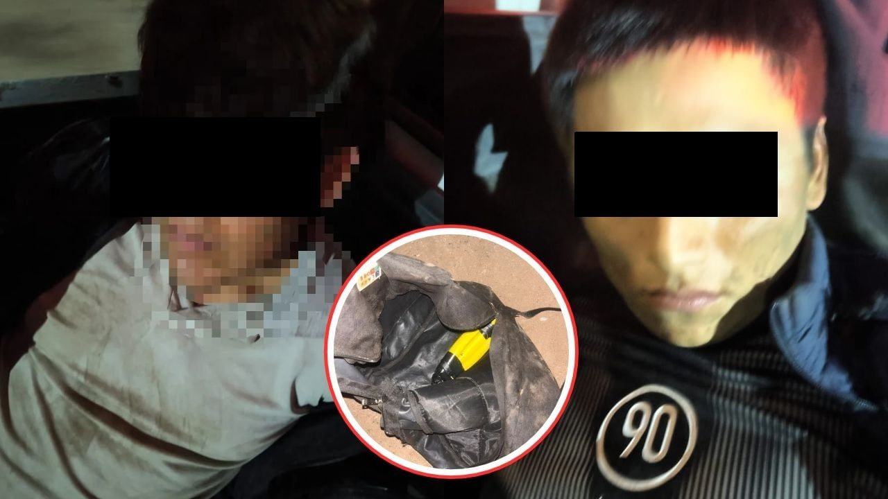
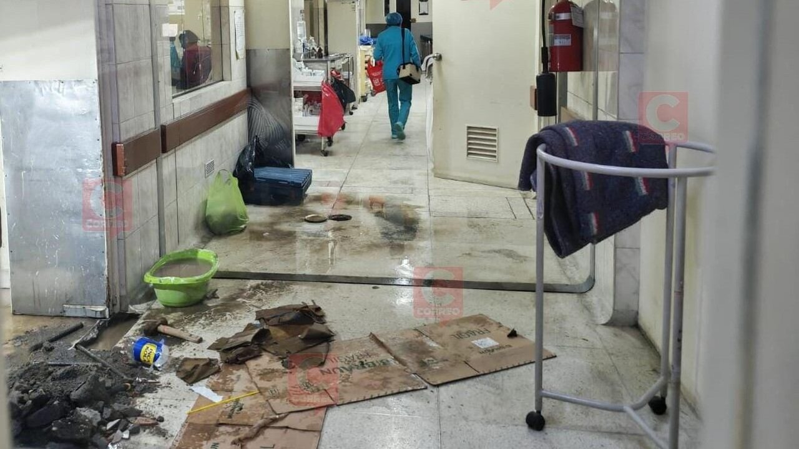

Un sismo de magnitud 5.0 remeció Bolivia la madrugada de este lunes, 16 de noviembre, reportó la Red Sismológica del Observatorio San Calixto. (hora local), se ubicó cerca de la frontera con Perú, en la provincia Franz Tamayo, en el departamento de La Paz; a una profundidad de 700 kilómetros, según la entidad boliviana.






Un sismo de magnitud 5.0 remeció Bolivia la madrugada de este lunes, 16 de noviembre, reportó la Red Sismológica del Observatorio San Calixto. (hora local), se ubicó cerca de la frontera con Perú, en la provincia Franz Tamayo, en el departamento de La Paz; a una profundidad de 700 kilómetros, según la entidad boliviana.
En entrevista con Gestión, Juan Carlos Rodas, gerente general de Alltech Región Andina, Ecuador, Colombia y Perú, explicó que la compañía especializada en nutrición y salud animal, con 45 años a nivel global y 33 años de operaciones en Perú, replanteó su base local.
Este lunes, diversas zonas de Lima experimentan una interrupción programada en el servicio de agua potable debido a labores de mantenimiento en el sistema de almacenamiento.
Un operativo ejecutado por efectivos de la Unidad Halcones de la Región Policial La Libertad permitió la captura de dos presuntos integrantes de la banda criminal denominada “Los Hijos del Estruendo”, quienes tenían en su poder cuatro cartuchos de emulsión color amarillo, en Trujillo.
Tras disputarse la quinta fecha de la Liga Peruana de Vóley 2026 a 2027, la tabla de posiciones sufrió algunas modificaciones luego de las derrotas de Universitario y Alianza Lima a manos de Regatas Lima y la Universidad San Martín, respectivamente.
Papa León catorce devela placa conmemorativa por su visita apostólica al Perú La inscripción instalada en la Nunciatura Apostólica recuerda su paso por Lima, Chiclayo, Cusco y Pucallpa, así como su vínculo religioso con el país.
¿A qué hora abrirán las puertas de Las Palmas para la misa del papa León catorce? El papa León catorce se prepara para cerrar su visita apostólica al Perú este lunes 16 de noviembre, después de seis días de actividades religiosas y encuentros con miles de fieles en diferentes regiones.
Tuvieron que pasar dos años para que Robert van de Corput, conocido mundialmente como Hardwell, volviera a encontrarse con su público peruano. Su anterior encuentro con Lima fue en ULTRA Perú 2024, donde se presentó como uno de los headliners y dejó al público con ganas de más.
Precio del dólar y cotización del tipo de cambio. Este lunes 16 de noviembre es el último día de la visita del papa León catorce en Perú. Actualidad TEMBLOR DE 4.2 en Perú HOY, lunes 16 de noviembre: conoce el epicentro, según el reporte del IGP Contáctenos email protected.
Cada edición dura menos de dos minutos. En la web tienes el resumen de cada historia y el enlace directo al medio original para leerla completa.
Conoce Olfatecho →